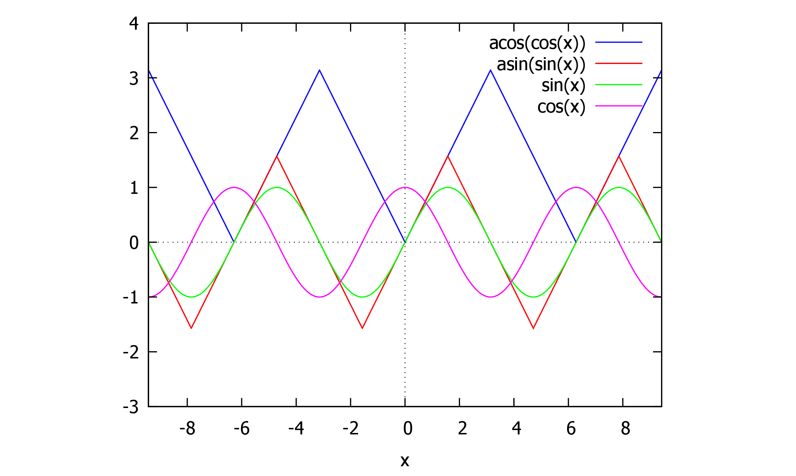
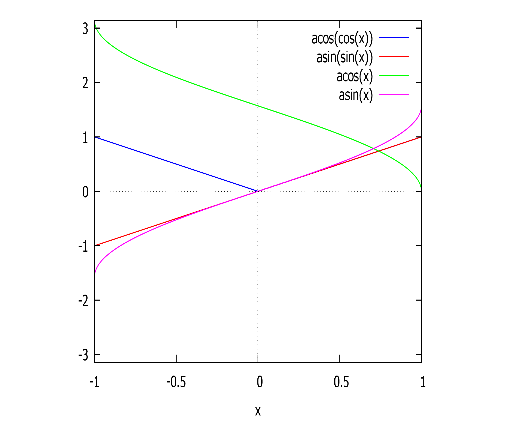
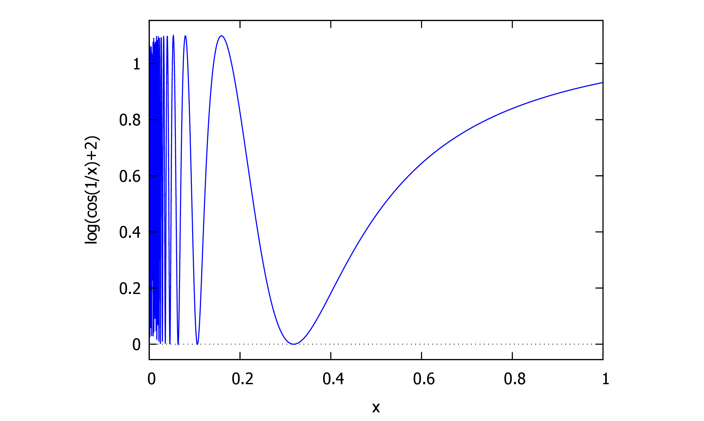
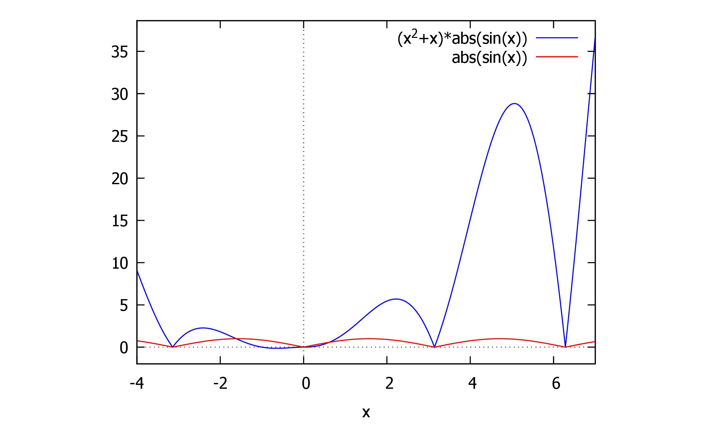
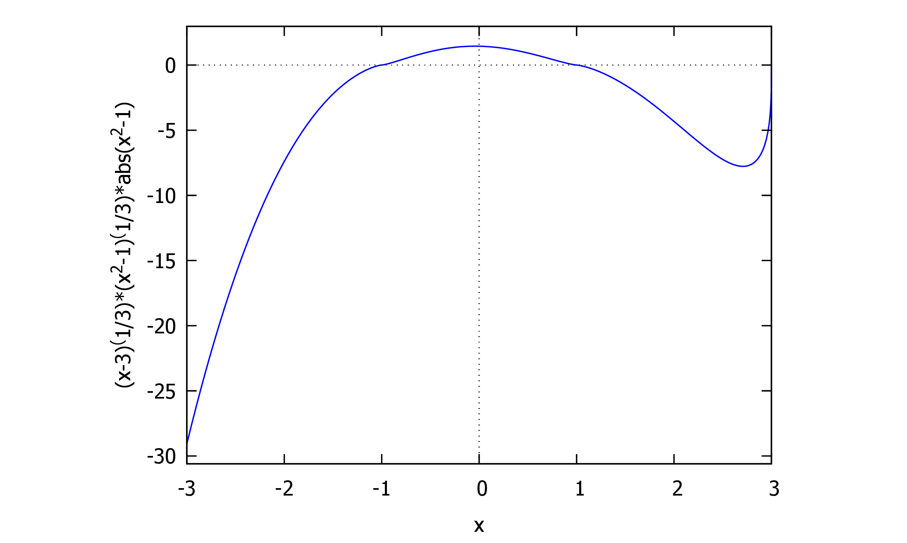
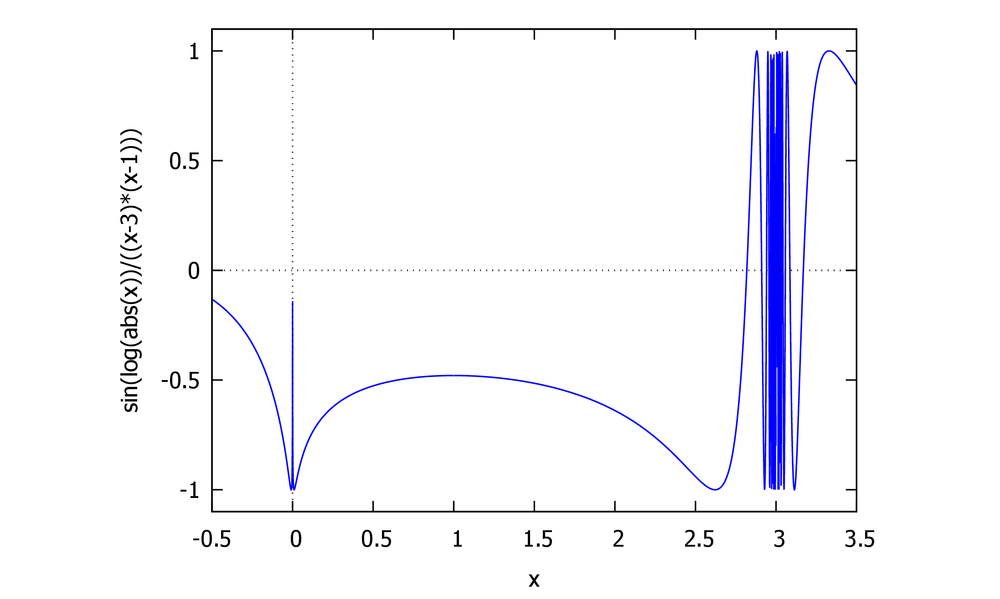

(%i14) |
|

1first 2
1.1和差化积 3
1.2♥some easy replace 4
2线性表出 4
2.1线性相关 5
3两个方程同解 7
3.1已知特征值，求特征向量 ♥ 9
3.2[分析]矩阵的对角化： 9
4A; 特征值；求可逆矩阵P ，相应的对角矩阵 10
4.1实对称矩阵A（含参数），求可逆矩阵P，求对角矩阵 10
4.2实对称矩阵的正交规范化 11
4.3的特征值 及对应的特征向量 11
4.3.1实对称矩阵必可对角化 11
5最最最易错的分解 12
5.1 12
5.2arccos的区间 15
6A的行列变换 18
7方程组同解 19
8函数极限 21
8.1复合函数 21
9数列极限 22
9.1极限存在证明 22
10连续与可导 23
11|A| 23
11.1克拉默法则 24
12方程实根数 24
12.1分情况讨论 25
12.2参数分离 25
13绝对值|X| 27
14中值定理 27
15已知两个方程组的通解，求公共解。 28
16sinx与cosx 29
17微分方程 29
17.1二阶，少y 30
17.2的二阶微分方程 30
17.3一个简单的倒带换 31
17.4高阶K重根 32
18定积分应用 32
18.1旋转体体积，非 32
18.2积分比大小 32
19重积分 33
19.1分段区间 33
19.2区间相同，二重积分保序性 34
19.3二重积分存在 35
20积分表 ?
[题目] 设阶可逆矩阵有特征值,对应的特征向量为,证明也是对应于的特征向量
[证明] 由题设,两边同乘,则
因为可逆，则. 由等于特征值之积，故. 综上，. 故也是对应于的特征向量。
和差化积公式：sin
[帮助记忆]
方法 1.可以只记第一个公式，将其它公式用诱导公式化成的形式。 方法 2.找规律。前两个公式是 和异名函数乘积，后两个公式是同名函数乘积。
口诀：
正加正，正在前，
余加余，余并肩。
正减正，余在前，
余减余，负正弦。
<||
(%i14)
tm_plot2d([log(1+t),t/(1+t)],[t,0,0.5])
[2003年真题]设向量组:可由向量组线性表示，则
. 当时，向量组必线性相关
B. 当时，向量组必线性相关
. 当时，向量组 必线性相关
D. 当时，向量组必线性相关
[简解] 根据定理："若可有线性表出，且,则必线性相关
即若多数向量可以由少数向量线性表出，则此多数向量必线性相关，故选 D.
若 为 矩阵，则以下哪个选项是正确的？
A. 若,由的行秩是行极大线性无关组的向量个数行向量组的总向量个数,则 B. 由的行秩是行极大线性无关组的向量个数=行向量组的总向量个数,则 的列秩是列极大线性无关组的向量个数=列向量组的总向量个数,则 D. 的列秩是列极大线性无关组的向量个数列向量组的总向量个数,则
因为的行秩的列秩， 而的列秩是列极大线性无关组的向量个数列向量组的总向量个数. 同理的行秩是行极大线性无关组的向量个数行向量组的总向量个数. 综上， min ,即有. 选D.
其余选项：
:只能得出.
B:的行秩是行极大线性无关组的向量个数行向量组的总向量个数
由特征值的定义
有 极大线性无关组中所含向量的个数称为向量组的秩，因此需判定中的线性无关向量。
由互不相同的特征值对应的特征向量线性无关，则与线性无关。
当,则, 故与线性无关，向量组的秩为 2.
♥ 和 线性无关 。 这是因为 和 是不同特征值的特征向量，所以它们线性无关，即 。要使 ，必须保证 ，这样矩阵 的秩才能为 2。Z
♥ 设是三阶矩阵，为的伴随矩阵，若是方程组的一个基础解系，则的基础解系可为
. . .
[分析]没有具体的线性方程组，先用秩来决定线性无关解的个数，再用 来得到解向量。
[解答] 用秩来决定线性无关解的个数： 因为 只有 1 个线性无关的解，即 ,从而 . . 有,故的基础解系中有 2 个线性无关的解向量。
用来得到解向量： 有非零解，则. 由,及,有,则 的列向量全是 的解。
而秩,故的列向量中必有 2 个线性无关。 需找到这 2 个线性无关的列向量：
综上，无关，无关。 选B.
♥[2011年真题)设 是四阶矩阵，为 的伴随矩阵，若 是方程组 的一个基础解系，则
的基础解系可为
. .
[分析]没有具体的线性方程组，先用秩来决定线性无关解的个数，再用 来得到解向量。
[解答] 用秩来决定线性无关解的个数： 因为只有 1 个线性无关的解，即,从而. . 有,故 的基础解系中有 3 个线性无关的解向量。 用来得到解向量： 由 有非零解，则 . 由,及,有.则 的列向量全是 的解。 而秩,故的列向量中必有 3 个线性无关。
综上，无关。
选D.
线性无关的解的个数相同=>系数矩阵的秩相同
基础解系相同
3两个方程同解
由 方 程 组 同 解 , 则 方 程 ( ll) 线 性 无 关 解 的 个 数 = 方 程 ( l) 线 性 无 关 解 的 个 数 = 方 程 ( l) 线 性 无 关 解 的 个 数 , 即 . 因 为 ,则 ,即 , 有
,则.
由于均非零，故,且,即. 由于,且 是 是 矩阵，则 . 代入,有.因为已得出,则.
.
AB=O时的秩:若 A是 m×n矩阵,B是 n×s矩阵,AB=O,则
r(A)+r(B)≤n.
已知 α1,α2,α3线性无关,则[α1,α2,α3]可逆,又有Aα1,Aα2,Aα3的表达式,想到相似,即AP=PB⇔P-1AP=B.
已知特征值，求特征向量 ♥
3.1
- 代入每个 λi,得到线性方程组
(λiE-A)
-
-
-
,系数矩阵 令 为 自 由 未 知 量 , 为 独 立 未 知 量 。 令 为 自 由 未 知 量 , 为 独 立 未 知 量 。 令 ,则 . 令 ,则 . 故 是一个基础解系，即属于特征值 的两个线性无关的特征向量。 2.当时，由,系数矩阵 令 为自由未知量， 为独立未知量。 令,则.故 是一个基础解系，即属于特征值 的一个特征向量。 综上，为三个线性无关的特征向量。 选.
令的特征值为,设有个线性无关的特征向量 ,
取,则有,其中.
[解答] 注意的每一列为一个特征向量，且中 排列次序应与 中 的排列次序 一致。
<with|color|red|[解答]>
A; 特征值；求可逆矩阵P ，相应的对角矩阵
[1999年真题]设矩阵,已知 的特征值
为1，-1,-1.求可逆矩阵,使得为对角矩阵？
并求出相应的对角矩阵。
[2002年真题 设实对称矩阵,求可逆矩阵,使为对角阵。
;求特征值 ✓;代入A，化最简阶梯形矩阵，自由未知数:q1得到基础解系
对矩阵 执行特征值分解。
- 将得到的特征向量作为矩阵 的列。
- 对 的每一列向量 执行归一化：，其中 是向量 的欧几里得范数。
| 矩阵 | A | kA | Ak | f(A) |
| 特征值 | λ | kλ | λk | f(λ) |
| 对应特征向量 | α | α | α | α |
相似矩阵的性质 对应的特征向量是变的.
| 矩阵 | A-1 | A* | A-1+f(A) |
| 特征值 | λ-1 | |A|λ-1 | λ-1+f(λ) |
| 对应特征向量 | α | α | α |
| 运用相似矩阵的性质,有 | ||||
| 矩阵 | A | A* | B | B+kE |
| 特征值 | λ | |A|λ-1 | |A|λ-1 | |A|λ-1+k |
| 对应特征向量 | α | α | P-1α | P-1α |
有理分式：分母能因式分解，含二次式的高次幂，则拆成分子为一次式的项
∫
| x2-2x+2 |
| (2+x2)2 |
(dbm:17.) |
|
(dbm:18.) |
|
(dbm:18.) |
|
(dbm:18.) |
|
(dbm:18.) |
|
(dbm:18.) |
|
(dbm:18.) |
|
♥含 sqrt (
| ax+b |
| cx+d |
)的积分,命 sqrt (
| ax+b |
| cx+d |
)=t.
原式 =∫
sqrt (
8
2
| x-2 |
| 3x |
)
1
2
0
| 12t2 |
| (3t2-1)2 |
(dbm:3.) |
|
(dbm:3.) |
|
(dbm:3.) |
|
(dbm:3.) |
|
(dbm:3.) |
|
(dbm:3.) |
|
(dbm:3.) |
|
(dbm:3.) |
|
incorrect syntax: { is not an infix operator
\int_0^{\frac{
^
(dbm:3.) |
|
(dbm:3.) |
|
(dbm:3.) |
|
(dbm:3.) |
|
(dbm:3.) |
|
incorrect syntax: ; is an unknown keyword in a do statement.
step(hy(t));
^
使用留数法：令 可得 ;令 可得. 使用赋值法：分别令和,并代入和的值，解得：
(dbm:5) |
|
(dbm:5) |
|
<image||0.618par|||>
(dbm:5) |
|

(dbm:5) |
|

(dbm:5) |
|
(dbm:5) |
|
二重积分ddy 对应的积分区域为 如图所示，是 上方，下方，右侧的区域。交换积分顺序，将区域 写为的形式： 求 右边界.在边界上 .因为 ,故.即.则
—————————————————————————————————————
+++++++++++++++++++++++++++++++++++++++++++++
——————————————————————————————————
因为可以由经行变换得到，矩阵左乘
已知 为阶可逆矩阵，为书写简洁，不妨设 为三阶矩阵。
根据题设：将的第 1 行加到第 2 行得矩阵,则.
因此 ,其中 为 倍加初等矩阵。
利用倍加初等矩阵的逆矩阵，有,则.
根据定义，有,从而.
因为将一行 (或列) 的倍加到另一行 (或列),行列式的值不变，则.
故,即将的第 2 列从第 1 列中减去得,答案选 D
[分析]因为所求行列式中含 ,想到. 试着将题设转化成等式右边的两项。
[2005年真题] 已知齐次线性方程组
同解，
则
C. 3或 5 D. 2或 5
[分析]方程组同解，则 1.线性无关解的个数相同系数矩阵的秩相同；2.基础解系相同 [解答] 令方程组(l)的系数矩阵为.
令方程组(II)的系数矩阵为中十印如同知则的
由方程组同解，则方程 (II)线性无关解的个数=方程 (II)线性无关解的个数,即. 因 为 ,则 ,即 ,有
,则.
代入,则可以求方程组(1)的解。 对 高斯消元： 则令为独立未知量，为自由未知量。
令,解得.
则方程组(l)的通解是 为任意常数。
以下由方程组(II)的通解也是,求出 和.
注意有两部分：
是方程组 (II)的解；2.方程组 (II) 只有 1 个线性无关解，即.
第1部分：
因为应当是方程组 (II)的解，代入则得到 的方程组： ,解得 或.
第2部分：
情况一：当,方程组(ll)为 有 ,从而(I)与(II)不同解，故 应舍去。情况二：当时，方程组 有,从而方程组 (II) 只有 1 个线性无关解，即通解是为任意常数，(I) 与 (II) 同解。
故.选B
limx→0- -
∫
|
||
| x |
♥[2022年真题] 当 时， 是非零无穷小量，给出以下四个命题
(1)若,则;
(2)若,则;
(3)若,则;
(4)若,则
♥wrong usually
]
因为是复合函数，故利用复合函数的单调性质，“同增异减”。
[解答]
又因为单调增加，故
因为在上单调减少，其值域范围是(0,1),且在(0,1)上单调减少，故在上单调增加.
+2 单调增加；因为 单调增加，故单调增加。

下列条件中有几个是 的充分条件，几个是必要条件？
(1)(2)是充要条件,包含了全部子数列, 命题 (4)中,未出现的子数列 {x4n-3}可能发散,故原数列可能发散。故不是充分条件。
设是区间上单调减少且非负的连续函数， d 证明数列 的极限存在。 [解析] 1.证明极限存在，想到用单调有界定理，需要证明 单调且有界。 2.证明数列的单调性，需证明对于任意,都有或. 单调减，则有d
设函数d 则
[ 分 析 ] d 是 变 上 限 积 分 , 利 用 变 上 限 积 分 的 性 质 判 断 。 [ 知 个 ]
[解
判断连续性：因为 除有限个第一类间断点 外处处连续，故 可积。则 d 为连续函数
判断可导性：变上限积分 在某一点的左右导数等于被积函数 在这一点的左右极限。由于 ,即,故.左右导数相等，故在处可导。 综上，在处连续可导，故选
[2013年真题]是三阶非零矩阵，为的行列式为的代数余子式，若 ,则
则x1=
| n⋅2n-1 |
| (n+1)⋅2n |
=
| n |
| 2(n+1) |
[2011年真题]设为参数，则关于方程不同实根的个数，说法正确的是：
(注：考试中本题型为证明题，选择正确后需要对比详细过程)
A. 若,则方程有 2 个实根；若,则方程有 1 个实根
B. 若,则方程有 1 个实根；若,则方程有 2 个实根
C. 若,则方程有 3 个实根；若,则方程有 1 个实根
D. 若,则方程有 1 个实根；若,则方程有 3 个实根
[分析]
判定方程根的个数，一般通过求导判断函数形态，利用单调性和介值定理判定。 题目中函数的单调性受到的影响。此类问题有两种解法： 1.分情况讨论：对于不同的,判断单调区间的情况； 2.分离参数法：先将方程化为的形式，再讨论的形态。 如果可以分离参数，则尝试分离参数法。如果不能分离参数，或分离参数后的导数不易分析，则使用分情况讨论的方法。 本题参数可以分离，得到的形式，但不容易分析，故建议分情况讨论。
判断绝对值函数在一点是否可导，有两个重要推论，做选择题时可以直接应用： 且 是的不可导点；
在处不可导但可导，且在处连续，则综上，令,找的不可导点，即 1.找且的点。2.找且的点。在处可导的充要条件是.
loadfile: loading C:\Program
Files\XmacsLabs\MoganResearch-1.2.9.5\plugins\maxima\lisp\texmacs-maxima.lisp.
Loading C:/Users/admin/maxima/maxima-init.mac
Maxima 5.47.0 https://maxima.sourceforge.io
using Lisp SBCL 2.3.2
Distributed under the GNU Public License. See the file COPYING.
Dedicated to the memory of William Schelter.
The function bug_report() provides bug reporting information.
(%i12) |
|
(%i13) |
|
(%i20) |
|
(%i22) |
|
(%i28) |
|

(dbm:4) |
|
(dbm:4) |
|
(dbm:4) |
|

(dbm:4) |
|
设在[0,2]上连续，在(0,2) 内存在二阶导数，并设.可以证明存在 ,使得 为常数)求 的最小值，使不等式对任意满足条件的 都成立。

则令通解相等，解关于常数 的新方程组
[解答]
设是方程组(l)与(ll)的非零公共解，则
.
那么 再代入题设给出的,由此得齐次方程组 (III) 对系数矩阵高斯消元.
令,则. 即通解为为任意常数。
则.
则方程组的公共解为 为任意常数。
项同类函数乘积，分母包含,添起始项，来达到连锁消项的目的。
使用公式：2
[解答] .
1.若,添一项,则
时， 振荡但有界，即 又,而 为常数
故.
2.若,分两种情况， 或,其中.
若,
则.
若,
则.
综上，极限存在，可能为 0,1 或-1.
微分方程
[2016年真题设是二阶微分方程的解，已知,已知 ,且 为有理数，求.
[分析] 将代入微分方程，得到关于的关系式，由此求出的表达式。
[解答] 由,得.
♥得到 为不显含 的微分方程，
令,有.
原方程化为.
化为标准形式，除以的系数得
[2007年真题]令微分方程满足初始条件的特解为,求的值
[分析] 不显含的微分方程，令,将的二阶微分方程转化为的一阶微分方程。
[解答] .
此时将 作为未知函数， 作为自变量，化为标准形式为 ,不便于求解。 故将 作为未知函数，将上式转化为 ,即 . 令 ,其中 ,代入一阶线性微分方程的通解公式：
1. x=e-∫p(t)
重复数根：通解中的项
若为特征方程
的重复数根，
则对应的齐次方程通解中的 2项
求高阶齐次方程的通解：将个特征根对应的项相加得到通解
求阶常系数线性齐次微分方程的通解：
1 写出特征方程,求出其特征根
2 对每一个根，判断对应形式： 单重实根,对应一项;
♥重实根,对应项;
♥单重复数根 ,对应两项 ;
♥重复数根,对应项.
例
已知以 y=(C1x+C2)cos 2x+(C3x+C4)sin 2x,(C1,C2,C3,C4为任意常数)为通解的微分方程是 y′′′′′+ay′′′+by′′+cy'+dy=0,求 a+b+c+d.
3 将个根对应的所有项相加便得通解，其中为任意常数。
I1=∫
ln (1+2sin x)
π
4
0
2cos x cot x
π
4
0
π
4
0
| cos x |
| 1+x |
即.
[2003年真题 设 而 表示全平面，则dd
[分析] 由于和为分段函数，所以被积函数为分块函数，将积分区域按照被积函数拆分，分别积分。
[解答] 又在时;仅在时.则仅当时，被积函数不为0. 令此区域为,则.
有
令
ddy,其中.已知,其中
为有理数，求.
[分析] 被积函数中 是分块函数，先将积分区域拆分，去掉 max 符号。[解答]
被积函数在区域 的分界线为,即.将拆分为.如图所示。 与 相交于,与 相交于
(1,1).
区域中 中 max.
已知.区域,其中 为某函数。以下选项正确的是：
在积分区域上有,故.
和 在积分区域 上连续，且不恒相等，
所以 d d
综上选.
♥设二元函数(x,y)=xy
ln(x4+y6),则lim(x,y)→(0,0)f(x,y)=
3
2
[分析]二重极限存在，需证明点以 任何方式 趋于点时，函数都无限趋近于同一常数. |.运用,来证明对任何,不等式都成立；
常用方法： 2. 夹逼定理； 3. 将重极限转化为一元函数极限。 这里用 1,2, 3.
[解答] ,有,则
令,则时，,有
,
最后一个等式用了常数 .
故由夹逼定理 ,即
♥
(分析]判断二重极限是否存在，关键在于构建不同路径，看是否存在： 1.两种不同路径，点 沿不同路径趋向于点 时， 趋于 不同常数， 2.某一路径，点沿此路径趋于时，的极限不存在， 若1或2成立，则极限不存在。
构建路径的常用方法：
1.常见函数：,令,则不同时，极限不同。 2.坐标轴方向：令,或,即沿平行于轴或轴的方向趋于,得到一个极限； 3.归零：分子分母有相同项，则构建路径使分子分母上的其他项为0； 4.分子低阶：构建路径使分母只余一项，如,选择使分子为的低阶无穷小，则极限为
这里用 4 即可.
∫ln (sin x) dx=xln (sin x)-ln (cos x)+C
2.立方根函数积分：
3.其他根号函数积分：
4. 含有根号的三角函数积分：
5. 含有根号和指数的函数积分：
(这类积分通常需要换元法)
6. 含有根号和有理函数的积分：
(可能需要分部积分法)
1.有理函数积分(部分分式分解):
2.根式函数积分：
3.指数函数与三角函数的积分：
三角函数的分式，按顺序思考：
1.凑微分，
2.化简成一次式，或可以直接积分/凑微分积分的形式，
3.拆项，
4.和差化积，
5.万能代换。
不能凑微分，拆项或和差化积，所以用万能代换：命.
[解答]原式
(%i11) |
|
(%i12) |
|
